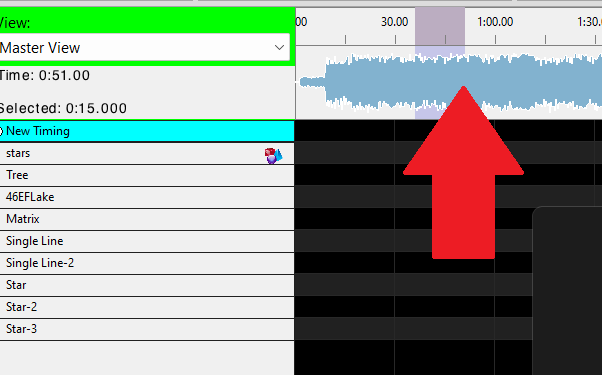
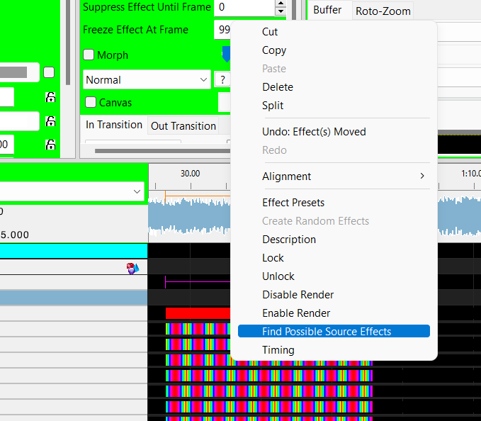

Sometimes when you are sequencing you may notice something that just isn't playing back the way you expect but it happens so quickly and you are not sure exactly what is going on.
There are a couple of ways to zoom in and freeze frame on exactly what is happening at a specific point in the sone.
The first is to hold down the control key and then click the left mouse button and drag within the timeline area. As you move the time marker the house (and model) view will display the current frame you have dragged to. Feel free to drag forward and back to zero on exactly the frame you want to see. |
 |
Alternatively if you know exactly the model/strand/node that you want to see you can drill down to the node data on the effects grid. The added advantage here is you can right click on the unexpected data and choose the "Find Possible Source Effects" menu item. This will show you a list of all possible effects in the sequence that could be impacting the node at this point in the song. |  |